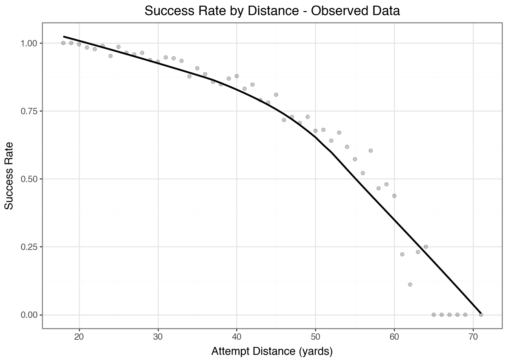

Problem: Evaluating NFL kickers accurately mid-season presents a significant challenge due to the sparsity of game data and the varying contexts of individual field goal attempts. Traditional metrics often struggle to provide insights into true player skill when sample sizes are limited.
Solution: This report proposes a Bayesian hierarchical model designed to evaluate the performance of NFL kickers. The model accounts for both individual player skill and the non-linear relationship between kick distance and the probability of success. By estimating unique player effects and then applying these predictions to a standardized set of simulated kicks (25-60 yards), I derive a contextualized and stable evaluation metric.
Key Findings: The Simulated Field Goal Over Expected (FGOE) metric, generated by this model, offers a superior and more reliable assessment of kicker performance compared to traditional observed metrics. This approach successfully mitigates the noise introduced by small sample sizes, enabling better comparisons across players. For example, this analysis demonstrates how the Simulated FGOE accurately positions elite kickers like Justin Tucker at the top, even when their traditional FGOE is skewed by things such as blocked kicks.
Impact: This model provides a way to quantify kicker performance. It not only offers a clear “rating” metric, but also quantifies the uncertainty surrounding each player’s estimated skill through credible intervals. This allows decision-makers to distinguish between genuinely high-performing kickers and those whose performance might be inflated by favorable circumstances or limited data. Players with fewer historical kicks will naturally show larger uncertainty bands, providing a realistic view of the confidence in their evaluation, while consistently strong performers will show tighter, higher-valued estimates. This data-driven insight empowers scouting teams and analysts to make more informed personnel decisions.
Any code not directly related to the model or derived metrics, such as plotting functions or library imports, has been collapsed to improve readability. You can expand these code blocks by clicking on them.
All necessary library imports and custom utility functions for data preparation, modeling, and plotting are defined below:
Code
import bambi as bmbimport polars as plimport numpy as npimport arviz as azimport polars as plimport bambi as bmbimport pandas as pdfrom arviz.labels import BaseLabellerfrom great_tables import GT, md, htmlfrom plotnine import*# This is from an LLMclass PlayerOnlyLabeller(BaseLabeller):def make_label_flat(self, var_name, coord_values=(), dims=(), index=None):# coord_values is a dict or list of tuples — try to extract the player nameifisinstance(coord_values, dict):return coord_values.get("player_name", var_name)elifisinstance(coord_values, (list, tuple)) and coord_values:return coord_values[0][1] # (dim_name, value)else:return var_namedef plot_fgoe(idata_fgoe, title, highlight=None, **kwargs): fgoe_mean = idata_fgoe["fgoe"].mean(("chain", "draw")) sorted_idata = idata_fgoe.sortby(fgoe_mean *-1) player_names = sorted_idata["player_name"].values.astype(str) axs = az.plot_forest( sorted_idata, var_names=["fgoe"], combined=True, labeller=PlayerOnlyLabeller(),**kwargs, ) ax = axs[0] ax.axvline(x=0, color="black", linestyle="--", linewidth=1) ax.set_title(title) ax.set_xlabel("FGOE") ax.tick_params(axis="y", labelsize=10)# Highlight player(s)if highlight isnotNone:ifisinstance(highlight, str): highlight = [highlight] highlight_set =set(highlight)# Y-axis tick labels are reversed from player_names yticks = ax.get_yticklabels()for i, label inenumerate(player_names[::-1]):if label in highlight_set: yticks[i].set_color("crimson") yticks[i].set_fontweight("bold")return axdef prep_data() -> pl.DataFrame:""" Create the base dataframe combining the two data sources Returns: pl.DataFrame: dataframe of field goal attempts with kicker info """ df_field_goals = pl.read_csv("data/field_goal_attempts.csv") df_kickers = pl.read_csv("data/kickers.csv") df = ( df_field_goals.join(df_kickers, on="player_id") .rename({"attempt_yards": "distance"}) .with_columns( success=pl.when(pl.col("field_goal_result") =="Made") .then(pl.lit(1)) .otherwise(pl.lit(0)), player_id=pl.col("player_id").cast(pl.Utf8).cast(pl.Categorical), player_name=pl.col("player_name").cast(pl.Categorical), season_type=pl.col("season_type").cast(pl.Categorical), ) )return dfdef create_grid(df: pd.DataFrame) -> pd.DataFrame:""" Takes in a pandas dataframe and creates 1 row per kick attempt for each kicker in 2018 Bambi relies on pandas... Returns: pd.DataFrame """ df_2018 = df[df["season"] ==2018]# grid for kicks between 25 and 60 yards df_grid_18 = ( df_2018[["player_id", "player_name"]] .drop_duplicates() .assign(key=1) .merge( pd.DataFrame({"distance": [x for x inrange(25, 61)]}).assign(key=1), on="key", ) .assign(__obs__=lambda x: np.arange(x.shape[0])) )return df_grid_18def pointrange_data( df: pl.DataFrame | pd.DataFrame, field="fgoe", group=["player_id", "player_name"]) -> pl.DataFrame:ifisinstance(df, pd.DataFrame): df = pl.from_pandas(df)# Custom function to extract HDI boundsdef hdi_bounds(values, prob=0.9): hdi_result = az.hdi(values.to_numpy(), hdi_prob=prob)return hdi_result[0], hdi_result[1] # lower, upperdef hdi_bounds_50(values): hdi_result = az.hdi(values.to_numpy(), hdi_prob=0.5)return hdi_result[0], hdi_result[1] # lower, upper data = ( df.group_by(group) .agg( fgoe=pl.col(field).mean(), hdi_90=pl.col(field).map_elements(lambda x: hdi_bounds(x, 0.9), return_dtype=pl.List(pl.Float64) ), hdi_50=pl.col(field).map_elements(lambda x: hdi_bounds_50(x), return_dtype=pl.List(pl.Float64) ), ) .with_columns( ymin=pl.col("hdi_90").list.get(0), ymax=pl.col("hdi_90").list.get(1), hdi_lower=pl.col("hdi_50").list.get(0), hdi_upper=pl.col("hdi_50").list.get(1), ) .drop(["hdi_90", "hdi_50"]) .with_columns( highlight=pl.when(pl.col("player_name") =="JUSTIN TUCKER") .then(pl.lit("red"))#.when(pl.col("player_name") == "ROBERTO AGUAYO")#.then(pl.lit("blue")) .otherwise(pl.lit("grey")) ) .sort("fgoe", descending=True) )return data
Data
The data contains kicks for multiple seasons, where each kick event is a row.
df = prep_data()# Bambi currently expects Pandas DataFrames,# so the Polars DataFrame is converted for model fitting.df_model_pd = df.to_pandas()
There is clear evidence of a non-linear relationship between kick distance and success rate, as shown in the plot below. Using splines in the model will allow us to estimate this relationship much more realistically than a simple polynomial model.
/Users/ryan/Projects/just4kicks/.venv/lib/python3.11/site-packages/plotnine/stats/smoothers.py:347: PlotnineWarning: Confidence intervals are not yet implemented for lowess smoothings.

Additionally, players have varying skill levels that traditional analytics cannot fully capture. The sparse data and hierarchical structure of the underlying process make this well-suited for hierarchical modeling approaches.
Using this domain knowledge, I will begin by building a simple model incorporating both kick distance (via splines) and individual player effects as primary features.
The distribution of player effects share the same sigma parameter
Spline with basis functions applied to distance
This model generates player-specific intercepts that adapt based on individual performance and data availability. Players with more observations will have their estimates pulled toward their own performance, while those with limited data will remain closer to the population prior. The shared variance across all players creates partial pooling, where information is borrowed between players to improve estimates for those with limited data.
Priors
Student-t priors were chosen for their heavier tails, providing more robust estimates to handle outliers or less certain prior knowledge, particularly for individual player effects.
One of the strengths of Bayesian modeling is the ability to incorporate domain knowledge through prior distributions. For instance, we expect field goals from typical distances—such as 30 yards—to be successful more often than not. To reflect this, I placed a prior on the intercept of \(Normal(1, 1)\), which corresponds to a probability greater than 50% (with the use of the logit link function).
# spline specification, miss you mgcv::s()s ="bs(distance, df=4, intercept=False)"priors = {# global intercept, more likely for success"Intercept": bmb.Prior('Normal', mu =1, sigma =1),# priors on spline s: bmb.Prior("StudentT", nu=3, mu=0, sigma=1),# prior for player componenent, shared sigma parameter"1|player_id": bmb.Prior("StudentT", nu=3, mu=0, sigma=bmb.Prior("HalfNormal", sigma=0.5) ),}# straightforward bambi definitionmodel = bmb.Model(f"success ~ (1|player_id) + {s}", data=df_model_pd, family="bernoulli", priors=priors,# these are default but critical to understand center_predictors=True, # better numerical stability noncentered=True# non-centered parameterization helps with hard to sample geometries)model
After specifying the model structure and priors, prior predictive checks serve as a diagnostic tool to assess whether the model’s implied outcomes are reasonable before observing any data. In this case, since field goals are generally made more often than missed, the prior predictive distribution should reflect a higher probability of success. The results from the prior predictive check suggest that the priors lead to outcomes consistent with this expectation, indicating that the model is plausible data-generating process.
Modeling the probability that success==1
Initializing NUTS using jitter+adapt_diag...
Sequential sampling (4 chains in 1 job)
NUTS: [Intercept, bs(distance, df=4, intercept=False), 1|player_id_sigma, 1|player_id_offset]
Sampling 4 chains for 1_000 tune and 1_000 draw iterations (4_000 + 4_000 draws total) took 72 seconds.
It’s important to check diagnostics in Bayesian models. While this doesn’t account for causality or domain-specific modeling checks, it ensures the MCMC algorithm is working as expected. All chains converged without divergent transitions, and effective sample sizes are adequate.
Spline
The table below shows the summary of spline coefficient distributions.
az.summary(idata, var_names=["Intercept", s])
mean
sd
hdi_3%
hdi_97%
mcse_mean
mcse_sd
ess_bulk
ess_tail
r_hat
Intercept
4.299
0.372
3.633
5.006
0.008
0.006
2127.0
2672.0
1.0
bs(distance, df=4, intercept=False)[0]
-0.610
0.531
-1.663
0.326
0.011
0.008
2238.0
2114.0
1.0
bs(distance, df=4, intercept=False)[1]
-3.778
0.396
-4.544
-3.053
0.007
0.006
2990.0
2793.0
1.0
bs(distance, df=4, intercept=False)[2]
-3.485
0.591
-4.579
-2.352
0.013
0.010
2211.0
2139.0
1.0
bs(distance, df=4, intercept=False)[3]
-8.280
0.870
-9.931
-6.646
0.016
0.013
3069.0
2986.0
1.0
Unlike player effect coefficients, they are not as easily interpretable in a table. The plots below are to help understand how they come together. First, plotting each basis function and it’s new shape after learning parameter weights.
Each basis function with the model parameters applied to it.
While these individual player effects are powerful for understanding the model’s insights into each kicker’s baseline skill, their direct interpretation as raw coefficients can be challenging to intuitively communicate to non-technical stakeholders as a standalone evaluation metric. This is why I will move towards the Simulated Field Goal Over Expected (FGOE), which translates these effects into a more relatable and actionable “rating” of expected performance on a standardized set of kicks.
Field Goals Over Expected
Traditional FGOE
What I outlined in my application was establishing at minimum a Field Goal Over Expected model. This contextualizes each kick and helps identify players over- or underperforming relative to expectation. This metric is used across multiple sports because it’s intuitive and easily digestible, especially for audiences with less analytical training.
2018 results
df_2018 = df_model_pd[df_model_pd["season"] ==2018]df_goe = model.predict(idata, data=df_2018, inplace=False)# takes the posterior predictive distribution and subtracts the# predicted probability from the observed kicksdf_fgoe = ( df_goe["posterior"]["p"] .to_dataframe() .reset_index() .merge(df_2018.assign(__obs__=lambda x: np.arange(x.shape[0])), on="__obs__") .assign(fgoe=lambda x: x["success"] - x["p"])[ ["chain", "draw", "fgoe", "player_name", "__obs__", "player_id"] ] .groupby(["chain", "draw", "player_name", "player_id"], observed=True) .agg({"fgoe": "sum"}) .reset_index())
Justin Tucker is the 3rd worst kicker? Objectively, Tucker was one of the best kickers in the league at the time of this data’s shapshot. Pitching this model in 2018 would have been difficult, and rightfully so.
2016-2017 results
If we look at the previous 2 seasons, Tucker was one of the better kickers in the by traditional FGOE.
The problem with using this metric alone is that limited sample sizes can introduce a significant amount noise. Upon examining the dataset, there were multiple blocked field goals against Tucker. While outside the scope of this analysis, it’s uncertain how much credit should be assigned to the kicker versus the blocking on the play for blocked kicks.
2018 results - without blocks
When blocked kicks are removed, the model results align a little better with expectations.
However, that approach is arbitrary, a more robust solution is needed.
Simulated FGOE
The model allows us to extract each player’s intercept parameter after accounting for kick distance, and apply it to simulated data. This enables what-if scenarios and projections beyond only observed data. By modeling all kickers on the same set of kicks, we can establish expectations for what each kicker should make.
I chose linear intervals for kicks from 25-60 yards. This approach prioritizes simplicity — it’s easy to explain and represents the first step toward gaining organizational buy-in for the model.
Standardized kick predictions
df_grid_18 = create_grid(df_model_pd)# Get posterior predictions without group effectsavg_preds = model.predict( idata, data=df_grid_18, inplace=False, include_group_specific=False)# posterior predictions on gridpreds = model.predict(idata, data=df_grid_18, inplace=False)df_pred = preds.posterior["p"].to_dataframe().reset_index()df_avg_pred = avg_preds["posterior"]["p"].to_dataframe().reset_index()# take the predictions form the players and subtract the posterior predictions without group effects. This provides the main source of the metric for simulated FGOEdf_sfgoe = ( df_pred.merge(df_avg_pred, on=["chain", "draw", "__obs__"], how="inner") .merge( df_grid_18[["player_id", "player_name", "distance", "__obs__"]], on=["__obs__"], how="left", ) .assign(fgoe=lambda x: x["p_x"] - x["p_y"]) # players expectation - avg)# polars for efficient aggregationdf_output = ( pl.from_pandas(df_sfgoe) .group_by(["player_id", "player_name", "draw", "chain"]) .agg(pl.col("fgoe").sum()))df_output.group_by(['player_name', 'player_id']).agg(fgoe_mean = pl.col('fgoe').mean(), simulations = pl.len())
shape: (51, 4)
player_name
player_id
fgoe_mean
simulations
cat
cat
f64
u32
"ROBERTO AGUAYO"
"43348"
-1.656506
4000
"MIKE NUGENT"
"29874"
-0.026966
4000
"JASON SANDERS"
"46298"
0.143966
4000
"GRAHAM GANO"
"35102"
0.036261
4000
"ROSS MARTIN"
"43815"
-0.385742
4000
…
…
…
…
"SEBASTIAN JANIKOWSKI"
"25326"
0.947021
4000
"SAM FICKEN"
"44240"
-0.727928
4000
"CAIRO SANTOS"
"41991"
0.393387
4000
"MARSHALL KOEHN"
"43736"
0.08794
4000
"EDDY PINEIRO"
"46426"
0.135145
4000
With the simulation of kicks, we can now look at a Simulated FGOE. This operates at the scale of posterior sample draws, with each player having 4,000 simulations across a distribution of kicks. This approach provides the ability to quantify uncertainty within the estimates and examine the range of potential outcomes, while addressing the sample size problem of a traditional FGOE.
Plotting Simulated FGOE
The plot below shows the posterior distributions of simulated FGOE. Compared to the traditional version, this metric is more stable and less noisy, and it follows intuitive principles that make interpretation easier. Many players cluster around zero, roughly representing replacement level, while deviations in either direction are easy to interpret.
For example, saying that Justin Tucker’s FGOE is between 1 and 4 field goals over expected is far more interpretable than stating that the log-odds of the player’s intercept increases by 0.2 and 0.8.
To compare the traditional vs simulated FGOE, we can look at the posterior distributions between the two approaches.
Note
The models aren’t necesarily 1:1 comparisons of the same distribution of kicks, because in the traditional version we are limited to the kicks that the kicker attempted. What is more important is to look directionally at what the simulated model does compared to the traditional. Easily shown is Justin Tucker is firmly at the top of the list, without having to adjust arbitrarily for blocked kicks.
The table below presents the generated leaderboard, showcasing the player_id, player_name, rating (Simulated FGOE), and rank for the top 10 and bottom 10 kickers evaluated by the model. The rank column is in ascending order, where a lower rank indicates a better performance.
Code
def create_leaderboard(df: pl.DataFrame) -> pl.DataFrame:""" Create the leaderboard of FGOE values Args: df: (pl.DataFrame) dataframe from `create_fgoe_draws()` Returns: pl.DataFrame: Polars dataframe of leaderboard """ idata_post = df.to_pandas().set_index(["chain", "draw", "player_name"]).to_xarray()# perc player was in top 5 of a draw df_top_5 = ( df.with_columns( player_name=pl.col("player_name").cast(pl.Utf8), rank=pl.col("fgoe").rank("dense", descending=True).over(["draw", "chain"]), ) .group_by(["player_name"]) .agg(top_5=(pl.col("rank") <=5).mean()) .sort("top_5", descending=True) )# summary table of the metric, with rank added and joined with top 5 leaderboard = ( ( pl.from_pandas( az.summary(idata_post, var_names=["fgoe"], hdi_prob=0.9) .reset_index() .assign(player_name=lambda x: x["index"].str.extract(r"fgoe\[(.+)\]")) ) .join(df_top_5, on="player_name") .sort(["mean"], descending=True) .with_row_index("rank", offset=1) .rename({"mean": "rating"}) .join( df[["player_name", "player_id"]] .unique() .with_columns(pl.col("player_name").cast(pl.Utf8)), on="player_name", ) ) .select( ["player_id","player_name","rank","rating","sd","hdi_5%","hdi_95%","top_5", ] ) .sort(["rank"]) )return leaderboardleaderboard = create_leaderboard(df_output)leaderboard.write_csv("leaderboard.csv")( GT( pl.concat([leaderboard.head(10), leaderboard.tail(10)]).rename( {"hdi_5%": "lower", "hdi_95%": "upper"} ) ) .tab_header( title="2018 NFL Kicker Leaderboard", subtitle="Top and bottom 10 players shown" ) .tab_spanner(label="Simulated FGOE", columns=["rating", "sd", "lower", "upper"])# .tab_stubhead(label="rank") .fmt_number(columns=["rating", "sd", "lower", "upper"], decimals=2) .fmt_percent("top_5", decimals=1) .data_color( columns=["rating"], domain=[leaderboard["rating"].min(), leaderboard["rating"].max()], palette=["rebeccapurple", "white", "green"], na_color="white", ) .data_color( columns=["lower"], domain=[leaderboard["hdi_5%"].min(), leaderboard["hdi_5%"].max()], palette=["rebeccapurple", "white", "green"], na_color="white", ) .data_color( columns=["upper"], domain=[leaderboard["hdi_95%"].min(), leaderboard["hdi_95%"].max()], palette=["rebeccapurple", "white", "green"], na_color="white", ) .data_color( columns=["top_5"], domain=[0, 1], palette=["white", "green"], na_color="white", ) .cols_label( player_id=html("Player Id"), player_name=html("Player Name"), rank="Rank", rating="Rating", sd="Variance", lower="Low-end", upper="High-end", top_5="Top 5", ))
2018 NFL Kicker Leaderboard
Top and bottom 10 players shown
Player Id
Player Name
Rank
Simulated FGOE
Top 5
Rating
Variance
Low-end
High-end
39470
JUSTIN TUCKER
1
2.58
0.78
1.25
3.81
85.9%
33469
STEVEN HAUSCHKA
2
1.88
0.77
0.56
3.07
49.8%
27091
MATT BRYANT
3
1.70
0.75
0.52
2.94
39.4%
21213
ADAM VINATIERI
4
1.43
0.71
0.22
2.53
23.9%
41953
CHRIS BOSWELL
5
1.38
0.95
−0.12
2.98
28.1%
38134
DAN BAILEY
6
1.37
0.80
0.05
2.66
23.8%
30932
STEPHEN GOSTKOWSKI
7
1.31
0.72
0.15
2.44
19.3%
31446
MATT PRATER
8
1.07
0.73
−0.06
2.31
11.6%
45046
HARRISON BUTKER
9
1.02
1.08
−0.60
2.91
19.2%
43068
JOSH LAMBO
10
0.95
0.95
−0.58
2.54
14.8%
46691
TYLER DAVIS
42
−0.30
1.38
−2.53
1.82
4.7%
46409
DAVID MARVIN
43
−0.34
1.36
−2.56
1.90
3.8%
46663
MATTHEW MCCRANE
44
−0.37
1.33
−2.65
1.67
3.3%
43815
ROSS MARTIN
45
−0.39
1.38
−2.47
2.03
3.2%
40114
CALEB STURGIS
46
−0.56
0.91
−2.02
0.96
0.3%
44240
SAM FICKEN
47
−0.73
1.36
−3.06
1.38
1.9%
45037
ZANE GONZALEZ
48
−0.75
1.25
−2.65
1.42
0.9%
46236
DANIEL CARLSON
49
−0.93
1.41
−3.19
1.33
1.5%
43704
NICK ROSE
50
−1.17
1.38
−3.47
1.01
0.5%
43348
ROBERTO AGUAYO
51
−1.66
1.31
−3.79
0.38
0.1%
Justin Tucker consistently ranks at the top of the leaderboard, demonstrating a high likelihood of being among the top 5 kickers by this metric. This positioning, even in seasons with a lot of variance (like 2018’s blocked kicks), underscores the model’s ability to provide a more stable and accurate assessment of true skill.
Robert Aguayo’s ranking reflects the influence of partial pooling from his prior seasons, contributing to his lower-end position despite a potentially stronger 2018 performance.
Tyler Davis with only a single kick in the dataset, has a very wide credible interval. This indicates that while the model provides a point estimate, there is substantial uncertainty, suggesting his true skill could credibly range from one of the worst kickers to a top 5 performer. This demonstrates the model’s ability to quantify uncertainty, allowing decision-makers to understand the confidence level in each player’s evaluation, especially for those with sparse data.